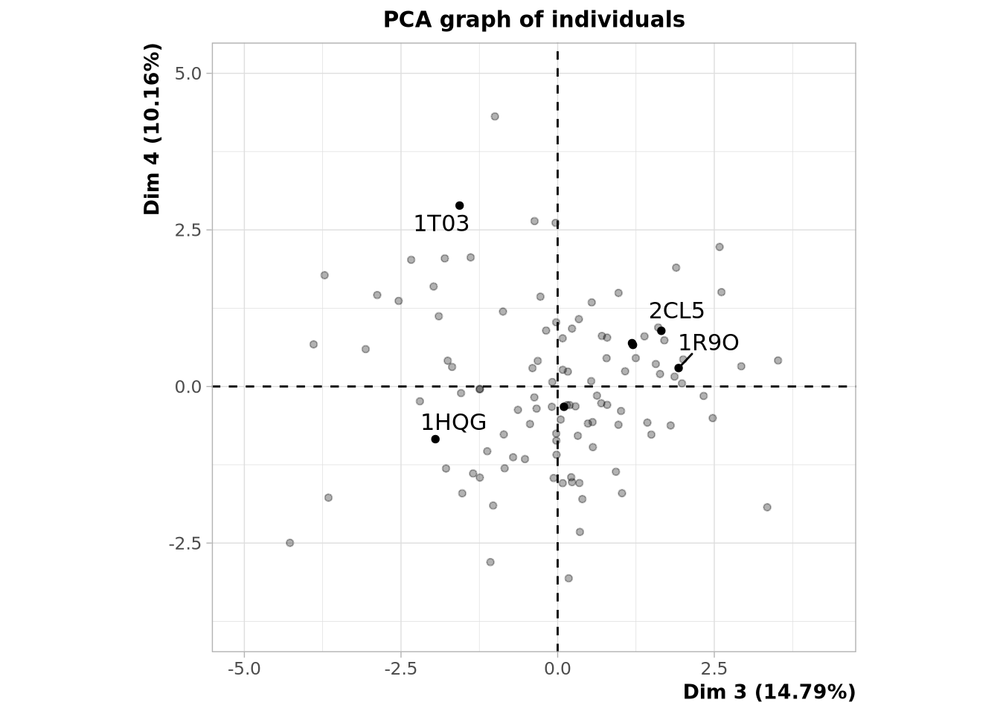

Code
load("../data/X.Rdata")
load("../data/Y.Rdata")Martin Bari Garnier
Chargement de l’environnement
Dans cette séance de travail pratique, nous avons comparé les résultats de méthodes non supervisées appliquées à un jeu de données correspondant à des poches de protéines. Le but étant de déterminer le druggabilité de ces poches en fonction de leur propriétés.
Chargement des données
Notre jeu de données contient 109 poches, chacune décrite par 18 descripteurs.
Nous observons que pour les données mises à l’échelle nous avons plusieurs valeurs propres des importances décroissante. Si nous observons le barplot des données non mises à l’échelle, nous n’avons qu’une seule valeur propre dont la valeur est très élevée. Si nous comparons les graphes des variables, nous voyons pour les données mises à l’échelle deux composantes principales expliquant respectivement 25,86% et 18,74% de descripteurs. Pour les données non mises à l’échelle nous voyons une première CP à 99,91%. Cela est dû à l’ordre de grandeur du volume réel qui est bien supérieur à celui des autres descripteurs.
Pour travailler sur la suite, nous allons donc utiliser les valeurs mises à l’échelle et nous choissons donc de travailler avec les trois premières composantes principales qui expliquent environ 60% des résultats.
Sur ce plan, nous avons 44,6% de variabilité ce qui implique que toute la variance du jeu de données n’est pas expliquée par ces deux vecteurs propres. Nous voyons qu’il y bien des variables mieux représentées que d’autres, elles correspondent à celles s’éloignant le plus de centre du graphe (ex: C_ATOM, polar, aliphatic) Les variables corrélées sont celles situées dans les mêmes régions par rapport à un axe et les anti-corrélées sont celles dans les régions opposées par rapport à un axe. Les variables “indépendantes” sont celles n’étant pas expliquées par les deux axes. Nous n’avons pas d’information sur elles et ne peuvent donc pas être comparées aux autres. Nous avons donc un premier axe qui caractérise la polarité
Il y bien des outliers, points isolés du reste. Pour les proches au centre de la projection sont celles étant mal expliquées par nos deux composantes principales.
Warning: ggrepel: 3 unlabeled data points (too many overlaps). Consider
increasing max.overlaps
@online{bari garnier,
author = {Bari Garnier, Martin and Bari Garnier, Martin},
title = {TP2 : {Analyse} En {Composantes} {Principales}},
url = {https://MartinBaGar.github.io/Master_ISDD_fiches//mda/TP2/tp2.html},
langid = {en}
}